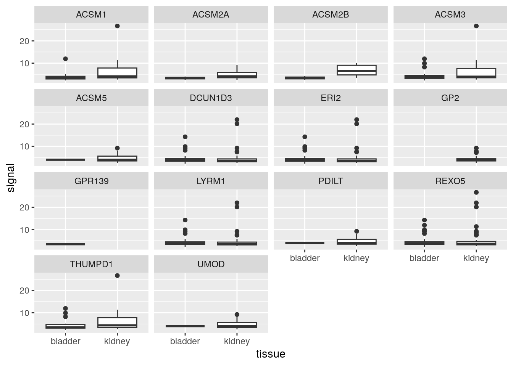
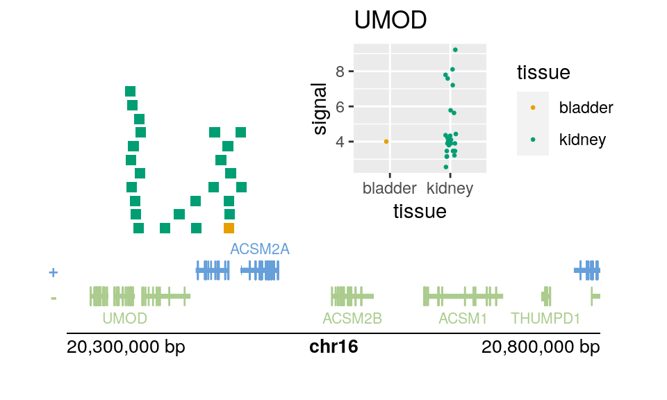

library(BiocBook.GRanges)
## Loading required package: BiocBook
##
## Attaching package: 'BiocBook'
## The following object is masked from 'package:graphics':
##
## title
data("exclude", package = "BiocBook.GRanges")
exclude
## Loading required package: GenomicRanges
## Loading required package: stats4
## Loading required package: BiocGenerics
##
## Attaching package: 'BiocGenerics'
## The following objects are masked from 'package:stats':
##
## IQR, mad, sd, var, xtabs
## The following objects are masked from 'package:base':
##
## anyDuplicated, aperm, append, as.data.frame, basename, cbind,
## colnames, dirname, do.call, duplicated, eval, evalq, Filter,
## Find, get, grep, grepl, intersect, is.unsorted, lapply, Map,
## mapply, match, mget, order, paste, pmax, pmax.int, pmin,
## pmin.int, Position, rank, rbind, Reduce, rownames, sapply,
## setdiff, sort, table, tapply, union, unique, unsplit, which.max,
## which.min
## Loading required package: S4Vectors
##
## Attaching package: 'S4Vectors'
## The following object is masked from 'package:utils':
##
## findMatches
## The following objects are masked from 'package:base':
##
## expand.grid, I, unname
## Loading required package: IRanges
## Loading required package: GenomeInfoDb
## GRanges object with 1649 ranges and 2 metadata columns:
## seqnames ranges strand | name score
## <Rle> <IRanges> <Rle> | <character> <numeric>
## [1] chr1 10468-11447 * | TAR1 1000
## [2] chr1 564463-570304 * | chrM 1000
## [3] chr1 724137-727026 * | (GAATG)n 1000
## [4] chr1 825006-825115 * | BSR/Beta 1000
## [5] chr1 1815107-1815204 * | LSU-rRNA_Hsa 1000
## ... ... ... ... . ... ...
## [1645] chrY 28555026-28555353 * | TAR1 1000
## [1646] chrY 28784131-28819345 * | (GAATG)n 1000
## [1647] chrY 58819367-58917648 * | (CATTC)n 1000
## [1648] chrY 58971913-58997782 * | (CATTC)n 1000
## [1649] chrY 59361267-59362785 * | TAR1 1000
## -------
## seqinfo: 56 sequences (1 circular) from hg19 genome6 Gene plots
Objectives
- For a region of the genome, find peaks near the TSS of genes and then plot their signal strength per gene, stratifying by the tissue origin of the peak.
We start by loading the pre-downloaded peaks ranges:
Likewise, we want to use hg19 genes again to match the hg19 peaks:
Adding gene symbols:
Find a region of the genome near a kidney-specific gene:
g |>
filter(gene_name == "UMOD")
## GRanges object with 1 range and 2 metadata columns:
## seqnames ranges strand | gene_id gene_name
## <Rle> <IRanges> <Rle> | <character> <character>
## 7369 chr16 20344373-20364037 - | 7369 UMOD
## -------
## seqinfo: 93 sequences (1 circular) from hg19 genome
region <- data.frame(
seqnames="chr16",
start=20e6,
end=21e6
) |>
as_granges()Combine the bladder and kidney peaks, and select certain columns:
library(AnnotationHub)
## Loading required package: BiocFileCache
## Loading required package: dbplyr
##
## Attaching package: 'AnnotationHub'
## The following object is masked from 'package:Biobase':
##
## cache
ah <- AnnotationHub()
kidney_pks <- ah[["AH43443"]]
## loading from cache
## require("rtracklayer")
bladder_pks <- ah[["AH44180"]]
## loading from cache
pks <- bind_ranges(
bladder=bladder_pks,
kidney=kidney_pks,
.id="tissue"
) |>
select(signal=signalValue, tissue)Finally, we perform the overlap join, locating peaks within 100kb of the TSS of the gene.
g_with_pks <- g |>
anchor_5p() |>
mutate(width=1) |>
filter_by_overlaps(region) |>
join_overlap_inner(pks, maxgap=1e5)
g_with_pks$tissue |> table()
##
## bladder kidney
## 208 337We can construct a faceted set of boxplots, first we make a tibble of data for our plot.
Then pass the data to ggplot (we could have just passed the data directly, but we plan to re-use the data).
library(ggplot2)
dat |>
ggplot(aes(tissue, signal)) +
geom_boxplot() +
facet_wrap(~gene_name)
Now let’s try to plot these in context, using plotgardener (Kramer et al. 2022). First we filter down to the peaks near UMOD.
Kramer, Nicole E, Eric S Davis, Craig D Wenger, Erika M Deoudes, Sarah M Parker, Michael I Love, and Douglas H Phanstiel. 2022. “Plotgardener: cultivating precise multi-panel figures in R.” Bioinformatics 38 (7): 2042–45. https://doi.org/10.1093/bioinformatics/btac057.
umod <- g |>
filter(gene_name == "UMOD") |>
anchor_5p() |>
mutate(width=1)
pks_to_plot <- pks |>
filter_by_overlaps(umod, maxgap=1e5) |>
anchor_center() |>
mutate(width=1e4) # to make the ranges more visibleWe then define a color scheme for the tissue variable, and make a ggplot object which will be added to our genome plots.
cols <- function(n) palette.colors(n+2)[-c(1,3)]
col_vec <- cols(2)
names(col_vec) <- unique(dat$tissue)
p <- dat |>
filter(gene_name == "UMOD") |>
ggplot(aes(tissue, signal, col=tissue)) +
# here we set a seed for jitter
geom_point(size=.5, position=position_jitter(width=.1, seed=5)) +
scale_color_manual(values = col_vec)We then create some parameters that will be shared across a number of the plots in plotgardener.
Finally we put all the pieces together on a page (for laying out the plot, first use showGuides=TRUE).
pageCreate(width = 5, height = 3, showGuides = FALSE)
plotGenes(
params = par, x = 0.5, y = 2.5, width = 4, height = .75
)
plotRanges(
pks_to_plot,
fill = colorby("tissue", palette=cols),
params = par, x = 0.5, y = 1.75, width = 4, height = 1.75
)
plotGenomeLabel(
params = par, x = 0.5, y = 2.5, length = 4,
just = c("left", "top")
)
plotGG(
p + ggtitle("UMOD"),
params = par, x = 2.25, y = 1.75, width = 2.5, height = 1.75
)